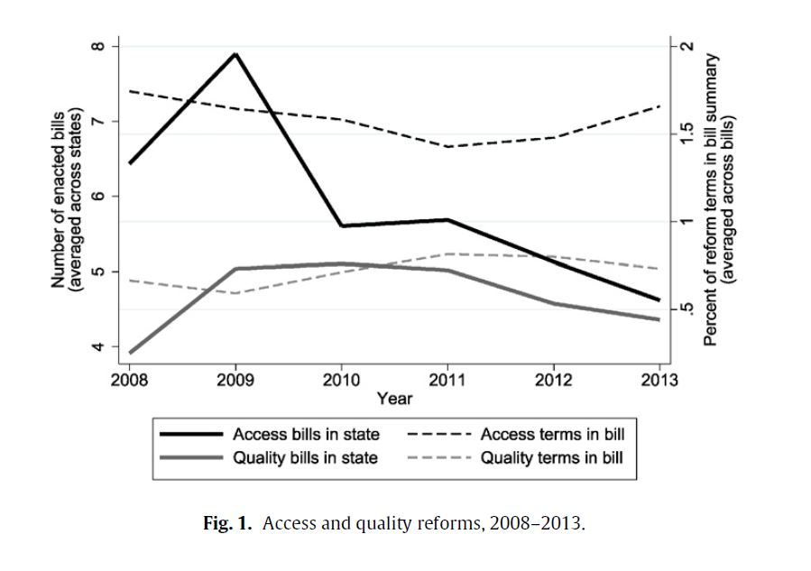
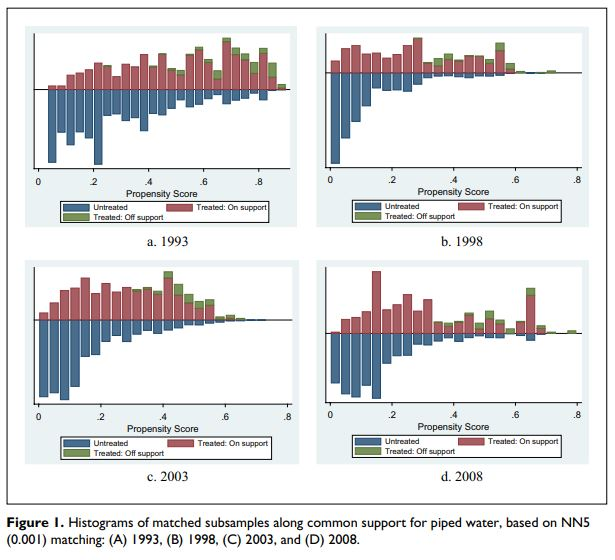

Heavy-rainfall events and associated natural hazards pose a major threat to rail transport and infrastructure. In this study, the correlation between heavy-rainfall events and three associated natural hazards was investigated using geographic information system (GIS) analyses and random-effects logistic models. The spatiotemporal linkage of a damage database from Deutsche Bahn (DB) Netz AG and the catalogue of radar-based heavy-rainfall events (CatRaRE) from the German Weather Service (DWD) revealed that almost every part of the German rail network was affected by at least one heavy-rainfall event between 2011 and 2021, with 23 % of the flood events, 14 % of the gravitational mass movements, and 2 % of the tree fall events occurring after a heavy-rainfall event. The random-effects logistic regression models showed that a heavy-rainfall event significantly increases the odds of occurrence of a flood (tree fall) by a factor of 22.7 (3.62). We find no evidence of an effect on gravitational mass movements. The heavy-rainfall index and the 21 d antecedent precipitation index were determined to be the characteristics of the heavy-rainfall events with the strongest impact on all three natural hazards. The results underline the importance of gaining more precise knowledge about the impact of climate triggers on natural hazard-related disturbances in order to make rail transport more resilient.
An important aspect of transport infrastructure resilience is recovery, i.e. the process of returning to original service levels after a disruption. In this paper, we estimate recovery trajectories of the German rail network for two specific types of natural hazards: floods and tree fall. Extensive traffic data on track segments of the Deutsche Bahn are matched to geospatial information on disruptive flood and tree-fall events between 2018-2020. We quantify mean resilience curves for flood and tree-fall events by taking average train counts for each day within a (–7, +14)-day window. Results suggest that traffic takes about three days on average to return to normal operations after a tree-fall disruption lasting longer than one day, while it takes five days on average to recover from a flood. Trajectories vary according to route type and are influenced by seasonal weather conditions.
A crucial step in measuring the resilience of railway infrastructure is to quantify the extent of its vulnerability to natural hazards. In this paper, we analyze the vulnerability of the German railway network to four types of natural hazards that regularly cause disruptions in German rail operations: floods, mass movements, slope fires, and tree falls. Using daily train traffic data matched with various data on disruptive events, we quantify the extent to which these four types of natural hazard reduce daily train traffic volumes. With a negative binomial count data regression, we find evidence that the track segments of the German railway network are most vulnerable to floods, followed by mass movements and tree-fall events. On average, floods reduce traffic on track segments by 19% of the average daily train traffic, mass movements by 16%, and tree fall by 4%. Moreover, when more than one type of natural hazard affects the track segment on the same day, train traffic on that segment falls by 34% of the average train traffic. Slope fires have an ambiguous and nonrobust effect on train traffic due to the reverse causality due to its triggering factors. This is the first study that attempts to rank different natural hazards according to their impact on railway traffic. The results have implications for the selection of resilience strategy and can help prioritize policy measures.
Social Mobility and Education Policy: A District Level Analysis of Legislative Behavior
Socio-Economic Review, 22(2), 2024
(Joint with L. Bellani &
K. Berriochoa)
Paper
Abstract
A vast literature has examined how perceptions of mobility shape demand for redistribution. These studies generally refer to contemporaneous tax policies demanded by those directly impacted. But social mobility is often measured as changes across generations. To account for these intergenerational effects, our analysis focuses on educational policies. We examine how social mobility at the district level explains legislative support for inclusive education policies. We first develop an electoral competition model where voters are altruistic parents, politicians are office seeking and the future economic status of the children is affected both by the degree of income mobility and by public education policies. We then analyze a newly compiled dataset of roll-call votes on California education legislation matched with electoral district levels of income mobility. In line with the model, our analysis suggests that upward mobility in a district negatively predicts legislative support for redistributive education bills.
Strategic Compromise, Policy Bundling and Interest Group Power: Theory and Evidence on Education Policy
European Journal of Political Economy, 7(3), 2023
(Joint with L. Bellani &
F. Scervini)
Paper
Abstract
Policy reforms are often multifaceted. In the rent-seeking literature policies are usually taken as one-dimensional. This paper models policy formation using a political contest with endogenous policy proposals containing two dimensions, e.g. access and quality of education. The two dimensions provide an opportunity to trade off one policy over another to make the lobbying opposition less aggressive. In a first stage, the government proposes a reform over the two policies, and in a second stage engages in a contest with an interest group over the enactment of the proposed reform. As a result, the government makes a compromise, under-proposing in the policy the interest group opposes and over-proposing in the policy the interest group desires. Effectively, there will be strategic bundling of desired policies with undesired ones in an attempt to increase enactment probability and overall utility. We study this prediction empirically using a newly complied dataset on education legislation in the states of California, Illinois and Texas. Results suggest that stronger opposition is associated with less quality reforms. Moreover, as predicted by the model, when bundling access reforms together with quality, the negative effect is counteracted.
Political-economic determinants of education reform: Evidence on interest groups and student outcomes
European Journal of Political Economy, 48, 2017
Paper
Abstract
Sample Figure
Education reforms come in two general types: access and quality reforms. Access reforms provide more educational opportunities, while quality reforms improve educational effectiveness. This paper investigates empirically the factors affecting the enactment of these two kinds of reforms in public primary and secondary education. By using a novel dataset of U.S. state legislation from 2008 to 2013, we find that both access and quality reforms are more likely in times of bad educational outcomes. Moreover, this is the first study documenting that teachers' union strength correlates positively with access reforms and negatively with quality reforms. Our results also shed light on the way teachers' unions promote their political interests: both lobbying and contributions are effective at opposing undesired reforms, but contributions have an extra effect of influencing the enactment of desired reforms.

Do piped water and flush toilets prevent child diarrhea in rural Philippines?
Asia-Pacific Journal of Public Health, 27(2), 2015
(Joint with J. Capuno and C. Tan Jr.)
Paper
Abstract
Sample Figure
Similar to other developing countries, diarrhea in the Philippines continues to be among the top causes of child mortality and morbidity. In pursuit of its Millennium Development Goals, the Philippine government commits to reduce child deaths and provide water and sanitation services to more rural households by 2015. Applying propensity score matching on the 1993, 1998, 2003, and 2008 rounds of the National Demographic and Health Survey to estimate the average treatment effect on the treated, it is found that the incidence of diarrhea among under-5 children is lower by as much as 4.5% in households with access to piped water and 10% in those with their own flush toilets, relative to comparable households. These findings underscore the need to ensure the quality of drinking water from the pipe or from other improved sources at the point of use, and the provision of improved and own sanitation facilities.

Does yardstick competition influence local government fiscal behavior in the Philippines?
In J. P. Faguet & C. Pöschl (Eds.) Is decentralization good for development? Perspectives for academics and policy makers, 2008, Oxford University Press.
(Joint with J. Capuno,
S. Quimbo,
A. Kraft,
C. Tan Jr.)
Chapter
Abstract
Using a panel dataset of cities and municipalities in the Philippines in 2001, 2004, and 2007, the study presented in this chapter investigated whether a local government’s expenditures or revenues from local sources are influenced by the fiscal behavior of its neighboring localities, controlling for the mayor’s term limit status. The results did not find effects of yardstick competition on local governments’ total fiscal spending (net of general public services). In localities with incumbent mayors who are eligible for another term (or belong to political dynasties), the effect of yardstick competition is positive on the provision of social and economic services. However, its effect is negative on local revenues, which suggests other forms of local government interactions are at play. The results support a policy promoting greater access to information to promote overall performance, and also caution about the limited impact of such policy in areas where incumbents are in their last term.
Democracy and poverty reduction
Philippine Review of Economics, 45(2), 2008 (Joint with C. Oyales)
Paper
Abstract
The past decade was witness to the rapid economic growth of countries whose political systems deviate from conventional democratic philosophy. Countries such as Taiwan, Singapore, and South Korea, among others, have become big economies rivaling major players like the United States and the United Kingdom. On the other hand, democratic, low-income countries have experienced relatively sluggish growth. In this paper, we explore the influence of democracy and political freedom on economic growth, utilizing poverty reduction as its indicator. We will focus on identifying the requisites of a functioning democracy within the context of developing nations that will enable it to effectively reduce poverty. Utilizing the 2-stage least squares method of estimation, our findings suggest that democracy, in general, has a negative influence on poverty reduction for developing countries. However, when complemented with trade openness, primary education, regulatory quality, effective governance, and voice and accountability, the outcome becomes positive.
Working Papers
Road, rail and waterway freight traffic interactions at German trimodal hubs
Submitted. (Joint with L. May, P. Parche & M. Derr)
Paper
Abstract
Intermodal freight transport is an essential and growing part of the whole
transportation system. However, traffic relationships between transport modes
along intermodal hubs have seldom been studied. This paper investigates the
dynamic relationships of freight traffic on road, rail, and waterways. We derive
daily incoming and outgoing traffic for inland waterway vessels, freight
trains, and trucks, and compile a dataset for German trimodal ports along
the river Rhine for 2023. Correlations and OLS regression analysis reveal the
concurrent and lagged interactions between the three modes of transport. Incoming
trucks are correlated with more outgoing trains and ships, and vice
versa. This holds true for both contemporaneous and one-day lag effects.
Incoming ships have a concurrent correlation with outgoing trains, but no
lagged effects. This is the first study to provide a longitudinal cross-modal
dataset of trimodal hubs and empirically investigate dynamic relationships
between transport modes. This paper contributes to the quantification of
intermodal shifts and thus enables a better understanding of traffic flows in
the freight transport network.